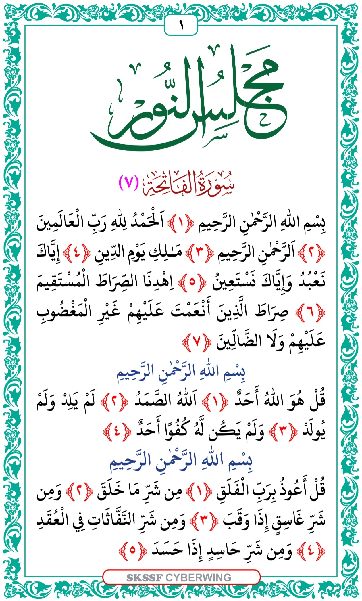

BLACK & GOLD EDITION
Assalamu Alaikum 🤍
Your Qur’an reading and recitation space. Choose a Juz or Surah, select a reciter, and listen with automatic continuation where supported.
📖 Al-Qur’an Al-Kareem
Choose a Juz or Surah. Qur’an text and audio require an internet connection.
Choose a Juz or Surah, then tap Load Qur’an.
Ayah-by-ayah recitation with automatic continuation when supported by the audio source.
Recitation & Ayat
Your selected passage will appear here.
📜 MAJLISUNNOOR
Use Previous and Next to read all pages in the uploaded order.
1 / 22

🤖 Ask AI
Type a question and open ChatGPT with your prompt. ChatGPT opens separately.
For religious rulings and hadith grading, verify answers with trusted scholars and reliable sources.
🔖 Bookmarks
Save an ayah from the Qur’an using its Bookmark button. Bookmarks are stored on this device.